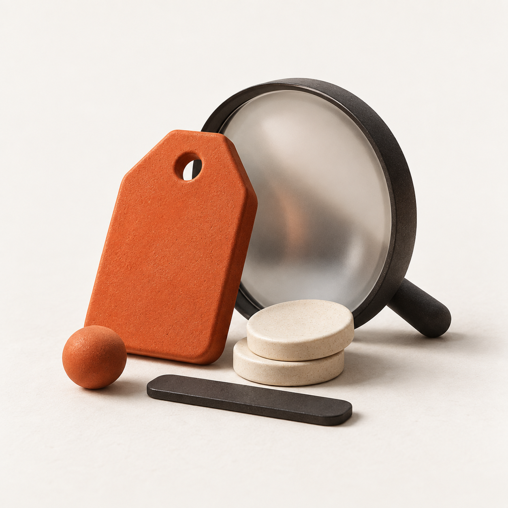
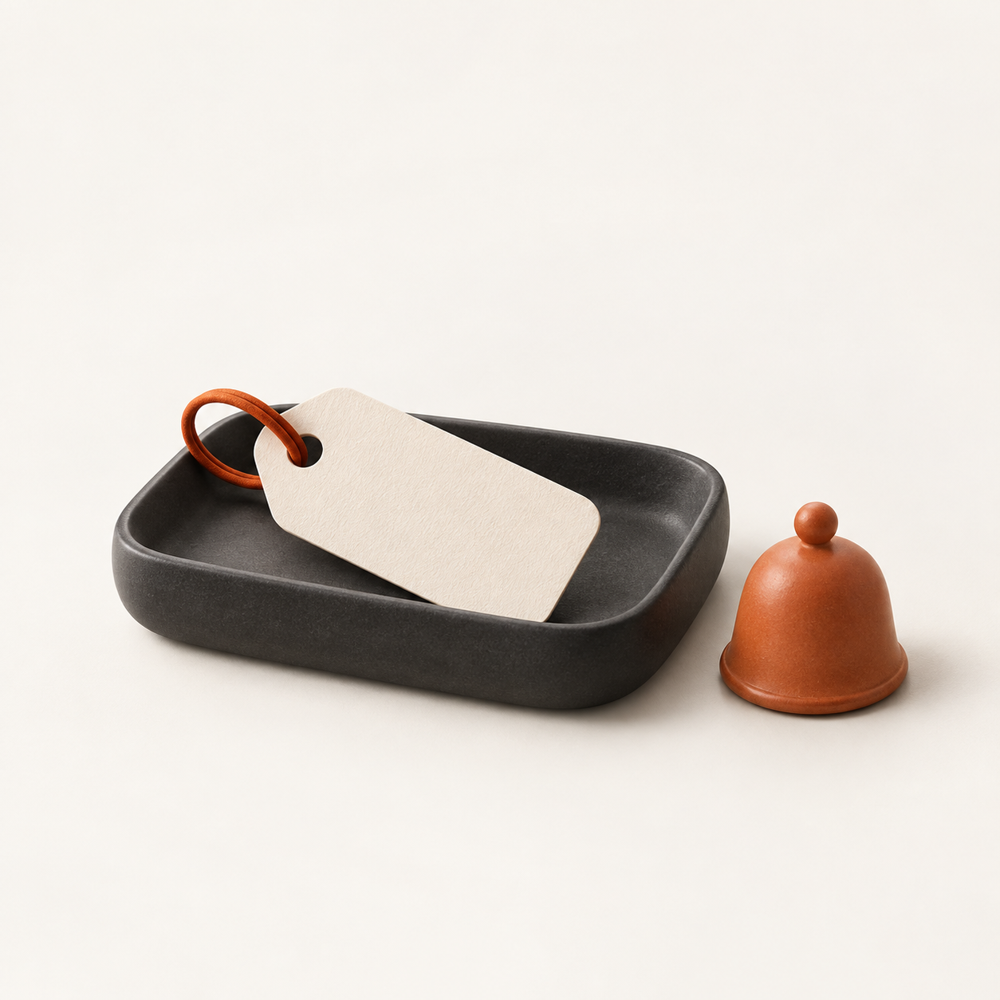

{kind=link}
{kind=link}
{kind=link}
{kind=link}
{kind=link}
Abertura do aplicativo
A etiqueta entra, o sinal se expande e a marca se revela.
SVG animado ↓ radar.Voltar ao aplicativo ↗
radar.Voltar ao aplicativo ↗
MOBILE 15 / IDENTIDADE & MOVIMENTO
Uma etiqueta marca a oportunidade. Três sinais mostram que ela foi encontrada. A identidade une compra e descoberta em um símbolo simples.
COR COM INTENÇÃO
#B6421E
#FFAC86
#222225
#F6F4F0
IMAGENS ORIGINAIS
Cerâmica, luz suave e formas reconhecíveis. Imagens de identidade, sem representar produtos do catálogo.


MOVIMENTO
Abertura em 1,65 segundo, transições de 160–300 ms e resposta curta ao toque. Com suporte a movimento reduzido.
A etiqueta entra, o sinal se expande e a marca se revela.
SVG animado ↓Um traço confirma o resultado, com saída curta.
SVG animado ↓Entrada e saída de folhas, troca de tela, skeleton de carregamento, feedback de acompanhamento e transição das ilustrações.
Abrir jornada de acesso ↗Símbolos vetoriais, ícone em PNG, camadas adaptativas, notificação monocromática, ilustrações e animações SVG.
{kind=link}
{kind=link}
{kind=link}
{kind=link}
{kind=link}
{kind=link}